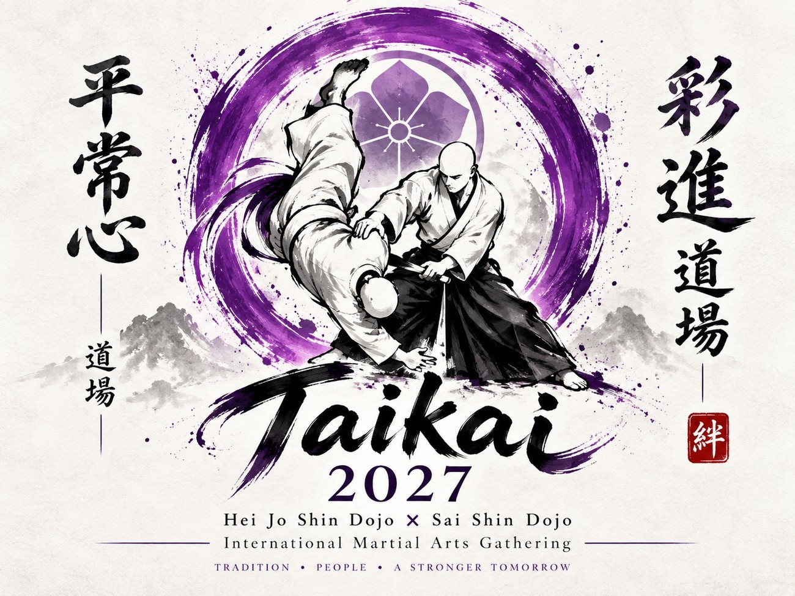

5 – 6 juni 2027 · Beringen, België5 – 6 June 2027 · Beringen, Belgium
Twee dagen traditionele KoKoDo Jujutsu onder leiding van Soke Irie YasuhiroTwo days of traditional KoKoDo Jujutsu led by Soke Irie Yasuhiro
Hou me op de hoogteKeep me informedDe International Taikai 2027 wordt georganiseerd door Hei Jo Shin Dojo samen met Sai Shin Dojo. Twee dagen lang wordt Beringen een ontmoetingsplaats voor KoKoDo Jujutsu: vijf tatami naast elkaar, instructeurs uit verschillende landen en de aanwezigheid van Soke Irie Yasuhiro. Op vrijdagavond opent het weekend in alle rust met het Shiatsu Seminar.
The International Taikai 2027 is organised by Hei Jo Shin Dojo together with Sai Shin Dojo. For two days Beringen becomes a meeting place for KoKoDo Jujutsu: five tatami side by side, instructors from many countries and the presence of Soke Irie Yasuhiro. On Friday evening the weekend opens quietly with the Shiatsu Seminar.
Registratie en praktische info volgen. Talen: Japans, Engels en Nederlands, met vertaling bij de ceremonies.Registration and practical information will follow. Languages: Japanese, English and Dutch, with translation at the ceremonies.
De online registratie opent naar verwachting in het eerste kwartaal van 2027. Wil je verwittigd worden zodra het programma en de tickets bekend zijn? Stuur een mailtje.Online registration is expected to open in the first quarter of 2027. Want to be notified when the programme and tickets are announced? Send us an email.
Georganiseerd door Hei Jo Shin Dojo (gastdojo, Beringen) en Sai Shin Dojo (mede-organisator), onder leiding van Soke Irie Yasuhiro, Dai Ko Kyu Shin Kai.Organised by Hei Jo Shin Dojo (host dojo, Beringen) and Sai Shin Dojo (co-organiser), under the leadership of Soke Irie Yasuhiro, Dai Ko Kyu Shin Kai.